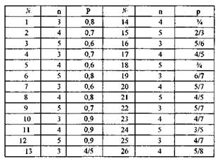

Скласти закон розподілу випадкової величини, що виражає число завантажених програм, якщо завантажується
Побудувати многокутник розподілу. Знайти функцію розподілу математичне сподівання, дисперсію і середнє квадратичне відхилення ціє випадкової величини.
Значення п та р взяти з таблиці:
